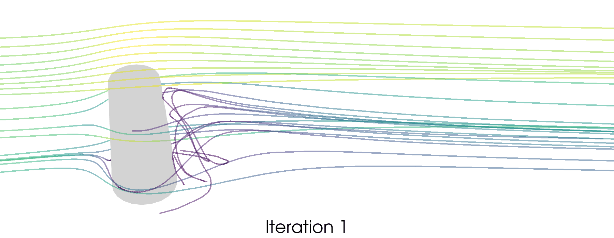

I develop scalable mathematical and computational methods for learning, inference, and decision-making in systems governed by partial differential equations.
I am a PhD student in the Computational Science, Engineering, and Mathematics program at the Oden Institute, advised by Prof. Omar Ghattas. My work connects scientific machine learning, inverse problems, uncertainty quantification, optimization, and high-performance computing.
Predictive digital twins
A unifying goal of my research is to develop predictive digital twins: computational models that combine high-fidelity physics and observations, quantify uncertainty in their predictions, and support reliable design and control.
01Inferencelearn hidden parameters from observations
→
02Uncertainty quantificationcharacterize predictive uncertainty and risk
→
03Optimization & controlmake robust decisions under uncertainty
Research themes
Scientific machine learning: operator-learning surrogates that respect physics, geometry, and derivative information.
Inverse problems: scalable recovery of distributed physical parameters from indirect and noisy observations.
Uncertainty quantification: high-dimensional representations of uncertainty and risk-aware prediction.
Shape derivative-informed neural operators for risk-averse shape optimization.
Shape optimization under uncertainty is expensive because risk estimation requires many PDE and sensitivity evaluations across uncertain inputs and changing geometries. The two diagrams below summarize the outer-loop problem and the geometric formulation used by Shape-DINO.
The OUU problem couples uncertain parameters, geometric design variables, the PDE state, a quantity of interest, and a risk measure. Select the figure to view it full size.
A diffeomorphic mapping connects each physical geometry to a common reference domain, allowing learning and differentiation on a fixed mesh.
Shape-DINO learns the parametric solution operator on this fixed reference domain and jointly approximates the PDE state and its Fréchet derivatives with respect to uncertain parameters and shape variables. Training on derivatives is essential for downstream optimization: state accuracy alone does not guarantee accurate gradients or reliable stationary points.

Evolution of the three-dimensional geometry during Shape-DINO-driven optimization. The animation is displayed at its original aspect ratio.
Main results
Accurate solution and derivative approximation across families of geometries.
A priori bounds connecting surrogate derivative error to optimization error.
Universal approximation results for multi-input reduced-basis neural operators in suitable C1 norms.
Three to eight orders-of-magnitude speedups in state and gradient evaluations in the numerical examples.
One to two orders-of-magnitude fewer PDE solves than a strictly PDE-based workflow for one OUU problem, including training-data generation.
PDE-constrained inference of three-dimensional mantle rheology from postseismic geodetic observations.
Postseismic surface motion contains information about viscosity structure deep in Earth’s mantle. This project develops a scalable inversion framework connecting GNSS displacement observations to a three-dimensional viscoelastic model of the Japan subduction zone.
Status. Ongoing work. Final Japan figures and observational-data results will be added when they are ready.
Publications
2026 · arXiv preprint
Shape Derivative-Informed Neural Operators with Application to Risk-Averse Shape Optimization
Xindi Gong, Dingcheng Luo, Thomas O’Leary-Roseberry, Ruanui Nicholson, and Omar Ghattas
Derivative-informed operator learning over variable geometries, with approximation theory and demonstrations in PDE-constrained shape optimization under uncertainty.
I am a CSEM PhD student at The University of Texas at Austin, supervised by Prof. Omar Ghattas. Before UT Austin, I earned a B.S. in Applied Mathematics and Statistics from Emory University.
I am interested in research positions spanning scientific machine learning, inverse problems, uncertainty quantification, optimization, and computational science.